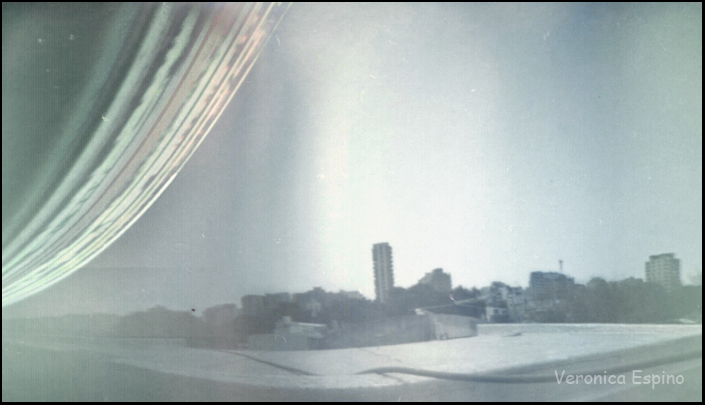

Cámara 35mm Modelo Ojo de Lata
Este hermoso modelo de cámara estenopeica fue construido por Karlo Sosa para su taller Ojo de Lata. Espero que lo disfruten y a probarlo!!!
Cómo Realizar una Solarigrafía

Una Solarigrafía es la imagen que registra el movimiento del sol sobre la bóveda celeste. Para obtener estas imágenes se utiliza una serie de pasos muy sencillos con resultados sorprendentes. Lo más maravilloso de esta técnica es que no necesita conocimientos de revelado. Los invito a registrar el paso del sol.
Seguir leyendo...
Cielos - Una experiencia multidimensional sobre el Cosmos
Sin dudas, uno de los eventos más lindos es el evento Cielos realizado en 2018 y 2019 coproducido por el Centro Cultural Rojas UBA y el CCK